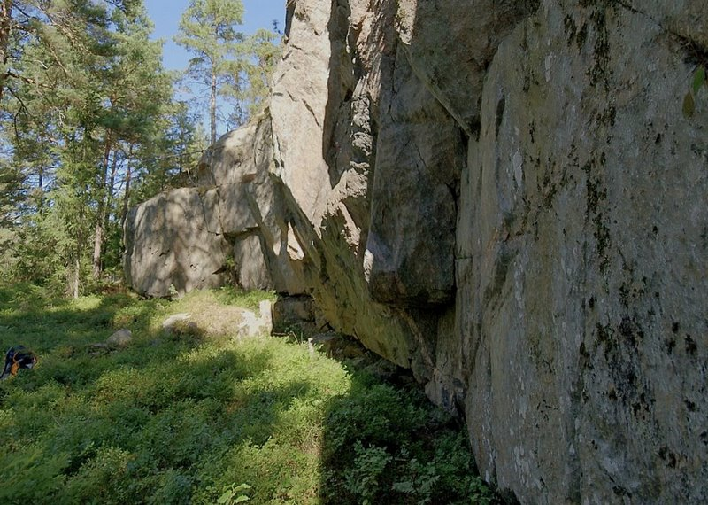
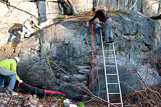

GPS: 59.224272,18.540115
Liten fin bouldervägg vid Björnö Naturreservat, Ingarö. Problemen startar överhängande och slutar på sva. 5-8m hög? Fin stenkvalité. Rymmer kanske 10 problem och är förmodligen inte värd en längre resa. OBS! Graderna är troligtvis helt felaktiga!! Tråd på
som även nämner en annan boulderklippa på Björnö.
Värmdöleden 222 avfart Ingarö. Kör igenom Brunn och fortsätt rakt fram mot Björkvik. En bit innan Björkviks brygga, sväng vänster vid skylt Björnö Naturreservat. Klippan ligger på vänster sida 50m före första farthindret.
Det finns en till Bouldervägg inne i Björnö Naturreservat. Parkera vid stora parkeringen sedan följ vägen förbi några hus tills Du kommer till en skarp högersväng. Går ner grusstigen som går åt vänster i ca. 300m och Du är framme. OBS: Detta är ett Naturreservat, snälla ta med Dig ditt skräp och försök att ta bort kritan o tickmärken! Tack.
Överblicksbild
Category:Bouldering
Category:Oklättrat
Category:Stockholm
Category:Nacka-Värmdö
Copyright (C) Permission is granted to copy, distribute and/or modify this document under the terms of the GNU Free Documentation License, Version 1.3